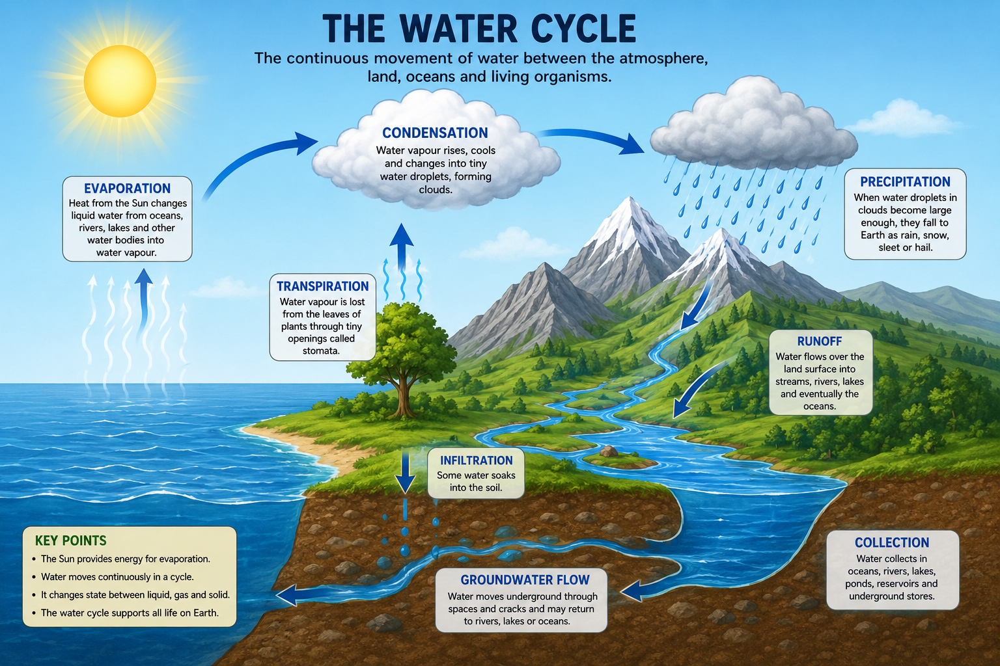

BIOLOGY • O/L 0510
🌱 The Living World
Characteristics of life, classification, biodiversity and conservation.
🌱 1. Characteristics of Living Organisms
Living organisms carry out a number of processes that distinguish them from non-living things. These processes are commonly remembered using the mnemonic MRS GREN.
🧠 MRS GREN
- M — Movement: An action by an organism or part of an organism that results in a change of position or place.
- R — Respiration: The chemical process in cells that releases energy from nutrients.
- S — Sensitivity: The ability to detect and respond to changes in the environment.
- G — Growth: A permanent increase in size and dry mass caused by an increase in cell number or cell size.
- R — Reproduction: The process by which organisms produce new individuals of their own kind.
- E — Excretion: The removal of metabolic waste products and substances present in excess from an organism.
- N — Nutrition: The taking in of materials needed for energy, growth, repair and other life processes.
🎯 Exam Focus
Do not simply memorize the letters of MRS GREN. Be able to define each characteristic and give an appropriate example.
📝 Example
A green plant shows movement when its leaves or shoots grow towards a source of light. It respires, responds to changes in light and temperature, grows, reproduces, excretes waste products and obtains nutrients through photosynthesis and mineral absorption.
🧩 2. Levels of Organization
Multicellular organisms are organized into different levels. Each level is built from the one before it.
➡️ Organization Pathway
Cell → Tissue → Organ → Organ System → Organism
- Cell: The basic structural and functional unit of life.
- Tissue: A group of similar cells working together to perform a particular function.
- Organ: A structure made up of different tissues working together.
- Organ system: A group of organs working together to perform major functions.
- Organism: An individual living thing.
🧠 Example: Human Organization
Muscle cells form muscle tissue. Different tissues form organs such as the heart. The heart works with other organs in the circulatory system. Together, the organ systems form the complete human organism.
🔬 3. Classification
Classification is the process of grouping organisms according to their similarities and differences.
Scientists classify organisms because there are millions of different organisms. Classification makes it easier to identify, study and communicate about them.
🎯 Importance of Classification
- Helps scientists identify organisms.
- Shows similarities and differences between organisms.
- Provides a systematic way of studying biodiversity.
- Helps scientists understand evolutionary relationships.
- Allows organisms to be given internationally recognized scientific names.
📊 Classification Hierarchy
Organisms can be arranged from broad groups to increasingly specific groups.
🧠 Remember the Order
Kingdom → Phylum → Class → Order → Family → Genus → Species
The groups become smaller and more specific as you move towards species.
🔑 Classification Keys
A classification key is used to identify an unknown organism by observing its characteristics.
A common type is a two-choice or dichotomous key. At each stage, two contrasting characteristics are provided. The correct choice leads to another step until the organism is identified.
📝 Example
An organism may first be separated according to whether it has wings or does not have wings. The group may then be divided again using another characteristic.
📖 4. Binomial Nomenclature
Binomial nomenclature is the scientific system of naming organisms using two names.
🧬 Two Parts of the Scientific Name
- Genus
- Species
The genus name begins with a capital letter while the species name begins with a lowercase letter.
When typed, the scientific name is normally written in italics. When handwritten, the two names can be underlined separately.
🧠 Why use scientific names?
- They provide a universal naming system.
- They avoid confusion caused by different common names.
- They can show relationships between organisms.
🌍 5. Major Groups of Organisms
Organisms can be grouped according to important characteristics such as cell type, cell organization, method of nutrition and body structure.
🦠 A. Prokaryotes / Bacteria
Bacteria are prokaryotic organisms. Their cells do not contain a membrane-bound nucleus.
🔬 Main Characteristics
- Usually unicellular.
- Prokaryotic cells.
- No membrane-bound nucleus.
- Genetic material is located in the nucleoid region.
- No membrane-bound organelles such as mitochondria.
- Usually have a cell membrane.
- Many have a cell wall.
- Some have flagella for movement.
- Some obtain nutrients by absorbing organic substances.
- Some can make their own food.
🧫 Examples
Examples include Escherichia coli and other bacterial species.
🍞 B. Fungi
Fungi are eukaryotic organisms that obtain nutrients from organic material.
🔬 Main Characteristics
- Eukaryotic.
- Most are multicellular, although some such as yeast are unicellular.
- Do not contain chlorophyll.
- Cannot carry out photosynthesis.
- Obtain nutrients by absorption.
- Many fungi are made of thread-like structures called hyphae.
- A mass of hyphae forms a mycelium.
- Many reproduce using spores.
- The cell wall contains chitin.
🍄 Examples
- Yeast
- Mushrooms
- Moulds
🧫 C. Protoctists
Protoctists are mainly simple eukaryotic organisms. They include organisms with characteristics similar to plants and animals.
🔬 Main Characteristics
- Eukaryotic.
- Mostly unicellular, although some are multicellular.
- Some contain chloroplasts and photosynthesize.
- Others obtain nutrients from organic material.
- Many live in water or damp environments.
🦠 Examples
- Amoeba
- Paramecium
- Euglena
🌱 D. Plants
Plants are multicellular eukaryotic organisms. Most green plants are adapted for photosynthesis.
🔬 Main Characteristics
- Multicellular.
- Eukaryotic.
- Cells have cellulose cell walls.
- Most contain chloroplasts.
- Most obtain food by photosynthesis.
- Store carbohydrates mainly as starch.
- Have specialized tissues and organs.
- Reproduce sexually and/or asexually depending on the plant.
🌿 Examples
- Mosses
- Ferns
- Maize
- Beans
- Flowering plants
🐾 E. Animals
Animals are multicellular eukaryotic organisms that obtain nutrients by consuming other organisms or organic material.
🔬 Main Characteristics
- Multicellular.
- Eukaryotic.
- Cells do not have cellulose cell walls.
- Cells do not contain chloroplasts.
- Obtain nutrients by ingestion.
- Usually capable of movement from one place to another.
- Have specialized tissues and organs.
- Most reproduce sexually.
🐘 Examples
- Humans
- Fish
- Birds
- Insects
- Mammals
📊 Comparing Major Groups
| Group | Cell type | Organization | Nutrition | Important feature |
|---|---|---|---|---|
| Bacteria | Prokaryotic | Usually unicellular | Varied | No membrane-bound nucleus |
| Fungi | Eukaryotic | Mostly multicellular | Absorption | No chlorophyll |
| Protoctists | Eukaryotic | Mostly unicellular | Varied | Very diverse group |
| Plants | Eukaryotic | Multicellular | Mostly photosynthesis | Cellulose cell wall |
| Animals | Eukaryotic | Multicellular | Ingestion | No cell wall or chloroplasts |
🌎 6. Biodiversity
Biodiversity refers to the variety of living organisms found in a particular area or on Earth as a whole.
🌿 Biodiversity Includes
- Different species of organisms.
- Variation between organisms.
- Different ecosystems and habitats.
💚 Importance of Biodiversity
- Provides food.
- Provides medicinal resources.
- Provides materials such as timber and fibres.
- Supports ecosystems and food webs.
- Provides economic opportunities.
- Maintains genetic resources.
- Provides cultural and educational value.
⚠️ Threats to Biodiversity
- Deforestation
- Habitat destruction
- Pollution
- Overhunting
- Overfishing
- Climate change
- Introduction of invasive species
🌿 7. Local and Medicinal Plants
Plants are important natural resources. Many plants found in Cameroon are used as sources of food, medicine, timber, fibres and other materials.
🌱 Examples of Uses
- Aloe vera: widely used in traditional and commercial preparations.
- Neem: used traditionally for various purposes and also studied for its biological properties.
- Ginger: used as a food ingredient and in traditional remedies.
- Plantain and banana: important food crops.
- Various medicinal plants: used traditionally by communities for healthcare purposes.
⚠️ Important
Traditional medicinal use does not automatically mean that a plant is medically proven or safe for every condition. Scientific investigation is important when evaluating medicinal plants.
🛡️ 8. Conservation
Conservation is the protection and careful management of natural resources and living organisms so that they can continue to exist and be used sustainably.
🌳 Why is Conservation Important?
- Prevents extinction.
- Protects habitats.
- Maintains biodiversity.
- Protects natural resources for future generations.
- Maintains ecosystem stability.
- Protects organisms that may provide food or medicines.
🛡️ Methods of Conservation
- National parks: areas protected to conserve wildlife and habitats.
- Wildlife reserves: areas where wildlife is protected.
- Reforestation: planting trees to replace those that have been removed.
- Afforestation: establishing forests in areas that were not previously forested.
- Controlled hunting and fishing: limits are used to prevent overexploitation.
- Protected species: laws can prevent the illegal killing or collection of threatened organisms.
- Sustainable resource use: resources are used at a rate that allows them to be replenished.
💧 9. Water
Water is one of the most important substances required by living organisms. It is essential for life because it takes part in many biological processes and provides a suitable environment for many organisms.
💧 Definition of Water
Water is a chemical substance made up of hydrogen and oxygen, with the formula H₂O. It is essential for the survival and functioning of living organisms.
🔬 Characteristics / Properties of Water
- Water is a good solvent: Many substances such as mineral salts, sugars and some gases can dissolve in water.
- Water is essential for chemical reactions: Many metabolic reactions in living organisms take place in water or require water.
- Water can exist in three states: It can occur as a solid (ice), liquid (water) and gas (water vapour).
- Water has a relatively high heat capacity: It can absorb a considerable amount of heat before its temperature changes greatly.
- Water is transparent: Light can pass through it, allowing aquatic plants to receive light for photosynthesis.
- Water can transport dissolved substances: Nutrients, mineral ions, hormones and waste products can be transported in water-based fluids.
- Water provides a medium for life: Many organisms live in water, including fish, algae and many microorganisms.
- Water is involved in temperature regulation: Water helps organisms control their temperature because of its ability to absorb and distribute heat.
- Water has a high boiling point compared with many similar small molecules: This allows it to remain liquid over a wide range of temperatures found on Earth.
- Water has strong cohesive properties: Water molecules attract one another, helping water move through narrow tubes such as xylem vessels in plants.
🌍 Importance of Water to Living Organisms
Water is required by plants, animals and microorganisms for many important life processes.
🌱 Importance of Water to Plants
- Photosynthesis: Water is a raw material used by green plants during photosynthesis to produce glucose.
- Transport of mineral ions: Water dissolves mineral ions in the soil and helps them enter the roots and move through the plant.
- Transport of substances: Water forms an important part of the fluid involved in transporting substances through the plant.
- Maintains turgidity: Water entering plant cells creates turgor pressure, helping herbaceous plants and young tissues remain firm.
- Supports growth: Water is needed for cell enlargement and many processes associated with plant growth.
- Cooling the plant: Water is lost from leaves during transpiration, helping to remove heat from the plant.
- Seed germination: Seeds require water to activate enzymes and begin the processes necessary for germination.
- Provides a medium for reactions: Many chemical reactions inside plant cells occur in aqueous conditions.
🐾 Importance of Water to Animals
- Digestion: Water is an important component of digestive fluids and helps create suitable conditions for digestion.
- Transport: Water forms a major part of blood plasma and helps transport dissolved nutrients, hormones, gases and waste products.
- Excretion: Water helps dissolve and remove metabolic waste products, particularly through urine.
- Temperature regulation: Water helps animals regulate body temperature. Evaporation of water from the body can produce a cooling effect.
- Chemical reactions: Many metabolic reactions in animal cells take place in water-based environments.
- Lubrication: Water is present in body fluids that reduce friction between moving surfaces.
- Maintaining cells: Water helps maintain the proper conditions and volume of cells and body fluids.
- Habitat: Water provides the living environment for aquatic animals such as fish and many invertebrates.
☁️ 10. The Water Cycle
The water cycle is the continuous movement of water between the atmosphere, land, oceans and living organisms.
Water does not remain permanently in one place. It continuously changes location and may change between liquid, solid and gaseous states.
🔄 Main Processes of the Water Cycle
- Evaporation: The process by which liquid water is changed into water vapour by heating, mainly from oceans, rivers, lakes and other water surfaces.
- Transpiration: The loss of water vapour from the aerial parts of plants, mainly through openings called stomata in the leaves.
- Condensation: The process by which water vapour cools and changes into tiny liquid water droplets, forming clouds.
- Precipitation: Water falling from clouds to Earth's surface. It may occur as rain, snow, sleet or hail depending on conditions.
- Runoff: Water flowing over the land surface into streams, rivers, lakes and eventually larger bodies of water.
- Infiltration: The movement of water from the surface of the ground into the soil.
- Groundwater movement: Some water moves through spaces and cracks underground and may eventually reach rivers, lakes, springs or the ocean.
- Collection: Water collects in oceans, rivers, lakes, ponds, reservoirs and underground stores.
🌊 How the Water Cycle Works
- The Sun provides energy that heats water on Earth's surface.
- Liquid water from oceans, rivers, lakes and other surfaces changes into water vapour through evaporation.
- Plants release water vapour into the atmosphere through transpiration.
- The water vapour rises into the atmosphere and cools.
- Cooling causes the water vapour to change into tiny water droplets through condensation.
- The droplets gather together to form clouds.
- When enough water accumulates in clouds, it falls back to Earth as precipitation.
- Some of the water flows over the land as runoff.
- Some water enters the soil through infiltration.
- Water eventually returns to rivers, lakes, groundwater and oceans, where the cycle can begin again.
☀️ The Role of the Sun
The Sun is the main source of energy driving the water cycle. Solar energy provides the heat needed for evaporation and contributes to the movement of water through the environment.
🖼️ Water Cycle Diagram

🎯 O/L GCE Exam Focus — Water
🧠 Make Sure You Can:
- Define water.
- State important characteristics of water.
- Explain why water is important to plants.
- Explain why water is important to animals.
- Define the water cycle.
- Explain evaporation.
- Explain transpiration.
- Explain condensation.
- Explain precipitation.
- Explain runoff and infiltration.
- Describe the stages of the water cycle in the correct order.
- Explain the role of the Sun in the water cycle.
🎯 O/L GCE Exam Focus
For the GCE, you should be able to apply the information in this topic rather than simply memorize headings.
🧠 Make Sure You Can:
- State and explain the characteristics of living organisms.
- Define classification.
- Explain why organisms are classified.
- State the classification hierarchy.
- Explain binomial nomenclature.
- Identify organisms using their characteristics.
- Compare major groups of organisms.
- Recognize important features of bacteria, fungi, protoctists, plants and animals.
- Define biodiversity.
- Explain the importance of biodiversity.
- Identify threats to biodiversity.
- Explain methods of conservation.
- Describe the importance and uses of plants.
📝 Test Yourself
- State the seven characteristics of living organisms.
- Define respiration.
- What is sensitivity?
- What is meant by growth?
- Arrange these in order: organism, organ, tissue, cell, organ system.
- Define classification.
- State the classification hierarchy from kingdom to species.
- What is binomial nomenclature?
- State two rules for writing scientific names.
- Give two reasons why classification is important.
- State two characteristics of bacteria.
- Why are bacteria described as prokaryotic?
- State three characteristics of fungi.
- What is a hypha?
- What is a mycelium?
- Give two examples of protoctists.
- State three characteristics of plants.
- State three characteristics of animals.
- State two differences between plants and animals.
- Define biodiversity.
- State three importance of biodiversity.
- State three threats to biodiversity.
- What is conservation?
- State four methods of conserving biodiversity.
- Explain why deforestation can reduce biodiversity.
- Explain why medicinal plants are important.
⚡ Quick Revision
Remember:
MRS GREN
Kingdom → Phylum → Class → Order → Family → Genus → Species
Classification helps us identify organisms, organize biodiversity and understand relationships between organisms.
Always look at an organism's cell type, organization, nutrition and structural features when identifying its major group.
Biodiversity should be protected through effective conservation and sustainable use of natural resources.
🧠 11. The Living World Quiz
Test your knowledge of everything covered in The Living World. Choose how many questions you want to answer.